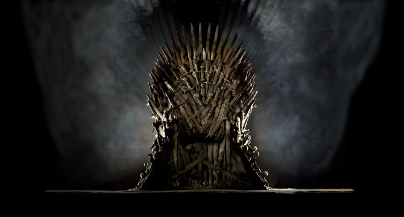

Top 5 seriali - moja ocena
Gra o tron
Amerykański serial fantasy stworzony przez Davida Benioffa i D.B. Weissa dla HBO, będący adaptacją sagi Pieśń lodu i ognia autorstwa amerykańskiego pisarza George’a R.R. Martina. Amerykańska premiera pierwszego sezonu w HBO miała miejsce 17 kwietnia 2011, w Polsce serial zadebiutował dzień później. Premiera czwartej serii serialu miała miejsce 6 kwietnia 2014
Większość głównych wątków historii rozgrywa się w Siedmiu Królestwach, państwie zajmującym bardzo dużą część podłużnego kontynentu Westeros. Rozciąga się on od położonego na południu słonecznego Dorne, przez mieszczący się na dalekiej i zimnej północy Mur, aż po znajdujący się za nim kraj zamieszkany przez dzikie plemiona oraz inne nieprzyjazne stworzenia. Fabuła pierwszego sezonu serialu ukazuje głównie właśnie losy Neda Starka, lorda władającego tzw. Północą z twierdzy Winterfell, oraz jego rodziny: Catelyn, jego żony z rodu Tullych, oraz ich dzieci: Robba, najstarszego syna i prawowitego dziedzica Winterfell; Sansy, urodziwej córki, marzącej o zostaniu wielką damą; Aryi, często zapominającej o szlachetnym pochodzeniu na rzecz zabaw z niżej urodzonymi przyjaciółmi; Brana, pasjonata wspinaczki, który chce zostać wielkim rycerzem; oraz najmłodszego z rodzeństwa Rickona; a także Jona Snow, nieślubnego syna Eddarda. Jon wstępuje do Nocnej Straży, starożytnego bractwa strzegącego wielkiego Muru, oddzielającego Siedem Królestw od tajemniczej krainy wiecznej zimy. Bran nieumyślnie, podczas jednej ze wspinaczek po murach zamkowych, odkrywa w jednej z wież oddających się stosunkowi seksualnemu Cersei Lannister, żonę króla, i jej brata, Jaimego, który zabijając Aerysa zyskał sobie przydomek „Królobójcy”. Jaime wypycha Brana z wieży, chłopak unika śmierci, tracąc jednak, w wyniku upadku, władzę w nogach Równocześnie za Wąskim Morzem, na kontynencie Essos, dwoje wygnańców – Viserys Targaryen i jego siostra Daenerys, najmłodsze dzieci Aerysa, planują powrót do Westeros i ponowne przejęcie rządów. Rozpoczyna się gra o tron.
